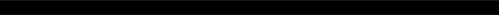
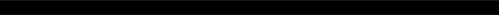

CONTACT
EXPERTISE
Gamer (no cap fr fr)
 100%Video Editing
60%Picture Editing
60%EXPERIENCE
STUDENT
TVL-ICT
2021-2022
- Can make a website using HTML.
- Trying to learn more languages.
Gamer (no cap fr fr)
 100%Video Editing
60%Picture Editing
60%TVL-ICT
2021-2022
ABOUT ME
Hi, I'm Juan Miguel Kent Allacaden. I am a soon to be programmer that is very good in using computers. Because of my background where I use computer daily doing assigned tast and just messing around and trying to learn diferent things. I can use computers to their full extent most of the time but when my knowledge on something is lacking, I can research and educate myself on that topic easily.
EDUCATION
TVL - ICT
STI College Las Piñas
2021 - 2022
The ICT is an education about technology to improve our skills in technology and teach it to others so we all have an idea in technology.
TVL
TVL strand is designed to develop students' skills that is useful for livelihood and technical projects.